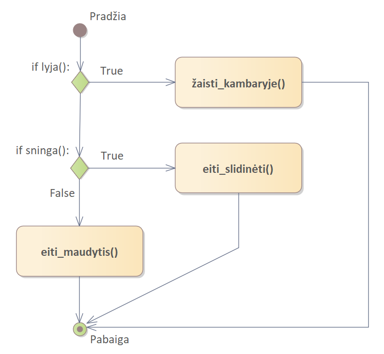
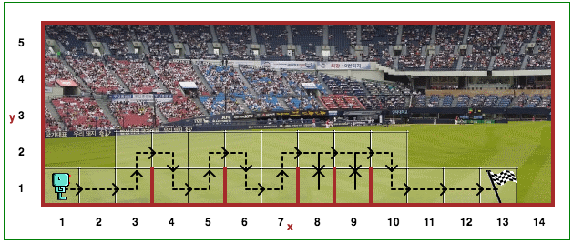

Robotukas gyvena Lietuvoje, kur gali ne tik lyti arba šviesti saulė, bet ir snigti. Sakykime, kad vienu metu gali būti tik vienas iš šių reiškinių. Tuomet, Robotukui gali tekti rinktis iš šių variantų:
if lyja():
žaisti_kambaryje()
elif sninga():
eiti_slidinėti()
else:
eiti_maudytis() # jei pakankamai šilta!
Atkreipkite dėmesį, kad 2 pasirinkimo atveju naudojam elif (tai reiškia "else if" arba "kitu atveju,
jei"). Jei atsižvelgtume į kitus galimus orų reiškinius, pavyzdžiui, krušą, griaustinį, rūką, dulksną ir t. t.,
galėtume pridėti kitus pasirinkimus naudodami papildomus elif: ... kodo blokus.
Ši diagrama rodo viršuje esančios programos galimus pasirinkimus:
10 lygyje parašėte programą, kurioje Robotukas šokinėja per kliūtis. Jūsų programa greičiausiai buvo tokia:
def suktis_dešinėn():
repeat 3:
suktis_kairėn()
def peršokti_kliūtį():
# kliūties peršokimo kodas
repeat 5:
pirmyn()
peršokti_kliūtį()
Nors šis kodas puikiai veikia jūsų pateiktame kliūčių pasaulyje, jo nepakaktų, jei kliūtys būtų išdėstytos nevienodu atstumu.
Toliau pateikiame programos griaučius, užpildžius trūkstamas dalis, turėtų veikti minėtam pasauliui. Pastaba: čia jums gali būti naudinga funkcija `baigti()` (kuri liepia Robotukui nustoti vykdyti komandas).
def peršokti_per_kliūtį():
# peršokimo kodas
def eiti_šokti_arba_baigti ():
if prie_tikslo():
# kodas
elif priekyje_laisva():
# kodas
else:
# kodas
repeat 42: # vėliau pakeisime ir šį kodą...
eiti_šokti_arba_baigti()
Atkreipkite dėmesį į if/elif/else sakinių struktūrą; kaip minėta pirmiau - jie suteikia tris
pasirinkimus: tik vienas iš jų bus įvykdytas.
Atidarykite Robotuko pasaulio 13 lygį ir nukupijuokite šį kodą:
def peršokti_per_kliūtį():
# peršokimo kodas
def eiti_šokti_arba_baigti ():
if prie_tikslo():
baigti() # liepia Robotukui sustoti
elif priekyje_laisva():
# kodas
else:
# kodas
repeat 42: # vėliau pakeisime ir šį kodą...
eiti_šokti_arba_baigti()

Reeborgas vėl šokinėja per kliūtis. Tačiau šį kartą visos kliūtys gali būti ne vienodai nutolusios viena nuo kitos.
Turėtumėte naudoti repeat ciklą, kad Robotukas šokinėtų per kliūtis ir baigtų ties tikslu (pozicija -
12, 1). Savo programoje privalote naudoti if/elif/else struktūrą.
Serija if/elif/ ... /else teiginių prilygsta pirmam kodo blokui, kurio sąlyga tenkinama
(True), įterpimui. Taigi:
if False:
daryti_1()
elif True:
daryti_2()
elif True:
daryti_3()
else:
daryti_4()
yra tas pat, kas:
daryti_2()
tuo tarpu:
if False:
daryti_1()
elif False:
daryti_2()
elif False:
daryti_3()
else:
daryti_4()
yra tas pat, kas:
daryti_4()
ir t.t.
Lygis 12: While Turinys Lygis 14: Raktažodisnot (ne)